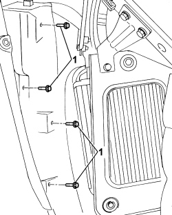
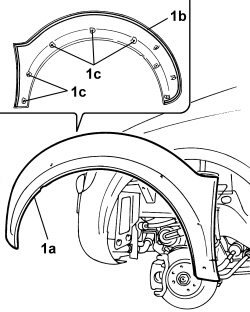

7055A24 MOULDING ON FRONT WHEEL ARCH ONE LH OR RH R R
- Path
- Procedures > 70 FITTINGS > 7055 MOULDINGS ON PROTECTIONS > 7055A EXTERIOR MOULDINGS > 7055A24 MOULDING ON FRONT WHEEL ARCH ONE LH OR RH R R
- Kind
- repair procedure (removal / refitting; the operation number is the code)
- Applies to
- engines: 1.3 JTD 16v; all production periods; only with equipment: SUV
- Interactive page
- https://sloeber94.github.io/elrnDB-fPnd/en/#/169002234
Applies to: engines: 1.3 JTD 16v; all production periods; only with equipment: SUV
 Removing
Removing
 Refitting
RefittingPosition the vehicle on a lift.
If working from the left side of the vehicle, remove:
Op. 4450B02 LEFT FRONT WHEEL R R
Op. 7055B65 ENGINGE BAY DUSTGUARD PROTECTION IN LEFT FRONT WHEEL ARCH R R
If working from the right side of the vehicle, remove:
Op. 4450B04 RIGHT FRONT WHEEL R R
Op. 7055B66 ENGINE BAY DUSTGUARD PROTECTION IN RIGHT FRONT WHEEL ARCH R R
Applies to: engines: 1.3 JTD 16v; all production periods; only with equipment: SUV
1. Working from inside the wheel arch compartment, unscrew the bolts.

Applies to: engines: 1.3 JTD 16v; all production periods; only with equipment: SUV
1. Use a blade to cut the adhesive.
Description | Code | Function | |
|---|---|---|---|
- | Knife | 1.878.077.000 | Remove the moulding |
2. Release the fastening studs.
3. Remove the moulding.
Applies to: engines: 1.3 JTD 16v; all production periods; only with equipment: SUV
Refitting
RemovingThoroughly clean the area of the wheelarch where the moulding will be bonded and remove any previous adhesive residues (where fastened to the same wheelarch).
1. Position the moulding (1a) in its seat and secure using adhesive (1b) and studs (1c).

Applies to: engines: 1.3 JTD 16v; all production periods; only with equipment: SUV
1. Working from inside the wheel arch compartment, tighten the bolts.

Applies to: engines: 1.3 JTD 16v; all production periods; only with equipment: SUV
If working from the left side of the vehicle, fit:
Op. 7055B65 ENGINGE BAY DUSTGUARD PROTECTION IN LEFT FRONT WHEEL ARCH R R
Op. 4450B02 LEFT FRONT WHEEL R R
If working from the right side of the vehicle, fit:
Op. 7055B66 ENGINE BAY DUSTGUARD PROTECTION IN RIGHT FRONT WHEEL ARCH R R
Op. 4450B04 RIGHT FRONT WHEEL R R
Remove the vehicle from the lift.
Topics linked from this page (4)
- 4450B02 left front wheel r r
- 4450B04 right front wheel r r
- 7055B65 ENGINGE BAY DUSTGUARD PROTECTION IN LEFT FRONT WHEEL ARCH R R
- 7055B66 ENGINE COMPARTMENT DUST SHIELD PROTECTION IN RIGHT FRONT WHEEL ARCH - R.R.